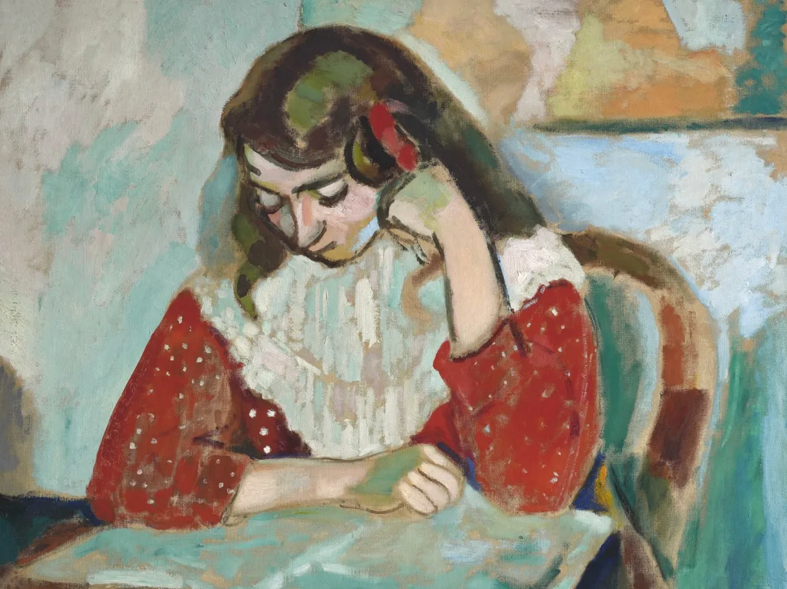

Impressionism's rebellion stemmed from rejecting the traditional, state-controlled French art establishment (the Salon) by creating their own independent shows, challenging academic standards with loose brushwork and everyday subjects, and capturing modern life's fleeting moments
Impressionism's impact on modern art is foundational, revolutionizing painting by prioritizing subjective perception, light, and emotion over realism, directly influencing Post-Impressionism, Fauvism, and Abstract Expressionism, and paving the way for contemporary art's focus on personal expression, diverse perspectives, and new techniques in fields like photography and design, all stemming from its break with tradition and celebration of everyday life.
“impressionism gave artist the freedom to truly express themselves without unnecessary confinement” - Jordan Williams

Monet
about
Impression,Sunrise (1877)
photo by credit

Degas
about
The Absinthe Drinker (1876)
photo by credit

Morisot
about
Cottage Interior (1886)
photo by credit
Pissaro
about
The Boulevard Montmartre on a Winter Morning (1897)
photo by credit
Van Gogh
about
Café Terrace at Night (1888)
photo by credit

Gaugin
about
Haere Mai (1891)
photo by credit
Matisse
about
Marguerite lisant, Collioure (1906)
photo by credit
Mondrian
about
Little House in Sunlight (1909)
photo by credit
When
February 26–May 31, 2026
Where
919 Broadway, Nashville, TN 37203